Virtual Seller (AI) for the Self-Order Kiosk
A seller with a face, a name and a voice on your kiosk. This manual has two parts: how the shop uses her day to day, and how to set her up.
1. Day to day
What the customer sees
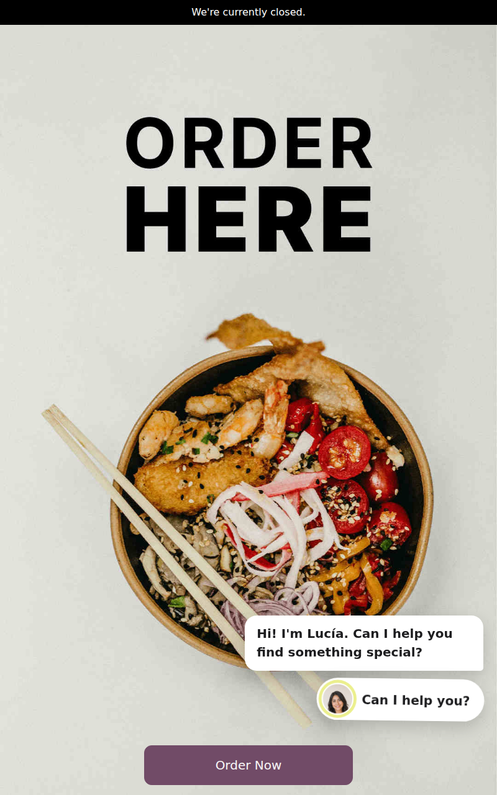
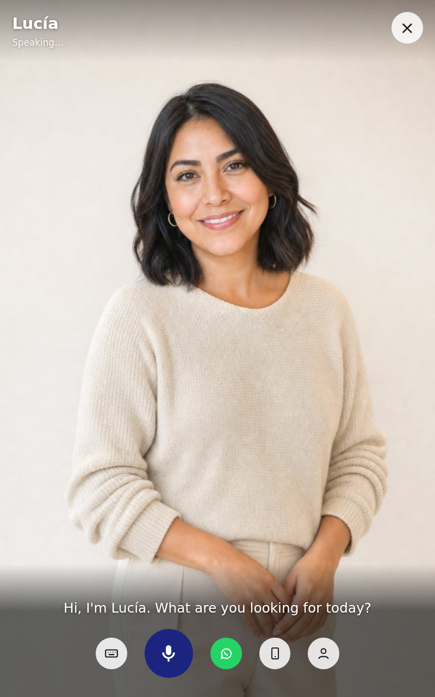

- The customer touches the button (or she opens by herself when someone stops in front of the kiosk, if you chose so).
- They talk, or type. She answers out loud and in writing, in the customer's language.
- She searches the kiosk's products and shows her picks at the top of the list, with their prices. She can open a product, choose its options and add it to the cart.
- The buttons under the conversation: Send it to my WhatsApp, Take me on your phone and Call a person from the shop.
- When nobody uses the kiosk for a while (90 seconds by default) the conversation ends and the kiosk starts again.
When she calls a person
If the customer asks for a person (or she cannot help), the people you chose get, depending on the settings:
- a chat in Odoo (Discuss) with a summary of what the customer wants;
- an alert on the cash register screens;
- an e-mail.
Go to the kiosk: the summary tells you what the customer was looking for and what she already showed.
When she goes to the phone
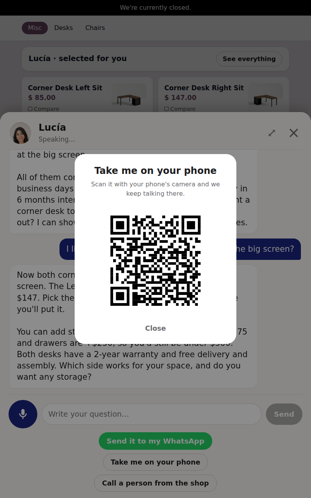
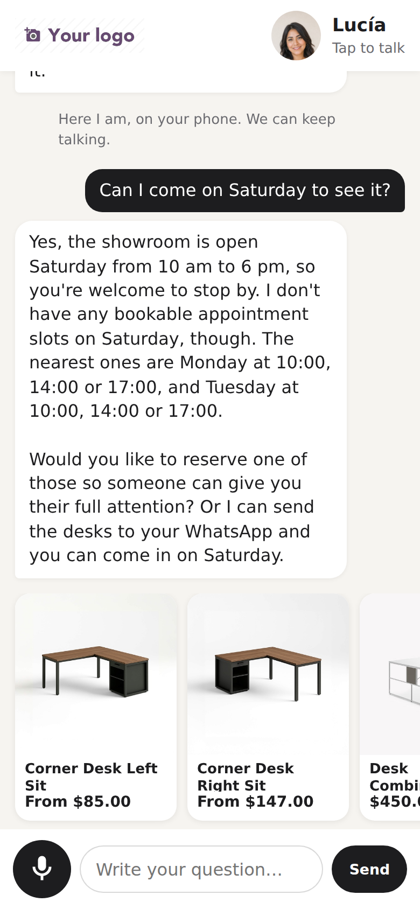
The customer scans the QR, or taps their phone on the kiosk's NFC sticker. The conversation continues on their phone, with its history and the products; the kiosk frees itself for the next customer. From the phone she can still answer, show products and book appointments.
2. Install
- On the server, install the Python packages:
pip install anthropic requests. - Install the app Self-Order Kiosk - Virtual Seller (AI). The free add-ons install by themselves when their other app is present (see section 4).
- Get the API keys:
- Anthropic (she thinks): console.anthropic.com › API keys.
- OpenAI (she listens and speaks): platform.openai.com/api-keys.
- The kiosk must open over HTTPS: browsers only allow the microphone and the camera on secure pages.
3. Set up a kiosk
Point of Sale › Configuration › Settings, choose the kiosk at the top, and in Mobile self-order & Kiosk switch on Virtual seller (AI). Each kiosk has its own seller. Save to apply.
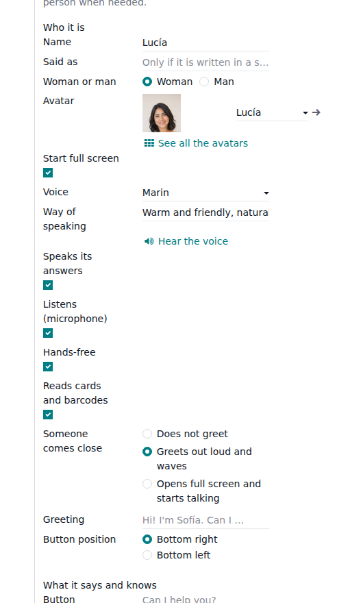
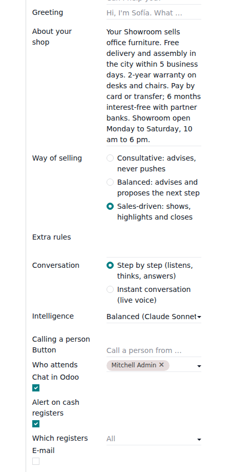
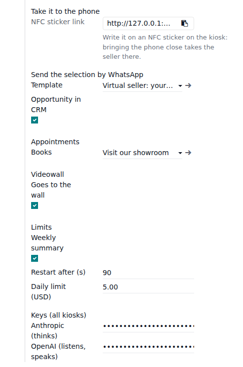
Who she is
| Name | Her name, e.g. Sofía. Said as: only if it is written in a special way (e.g. "AnelIA" said "Anelia"). |
|---|---|
| Woman or man | Filters the avatars and voices. |
| Avatar | Her photo. See all the avatars opens the gallery: eleven included, and you can add your own (a face photo and, optionally, a full-body photo for the full screen). |
| Start full screen | She opens big, with her full photo; otherwise as a chat panel. |
| Voice / Way of speaking | The voice, and how it sounds: "warm and friendly, Mexican Spanish". Hear the voice plays her greeting. |
| Speaks its answers / Listens | Turn the voice and the microphone on or off. Hands-free: after speaking she listens again by herself. |
| Reads cards and barcodes | With a USB/Bluetooth reader or the tablet's NFC, the customer shows a product tag and she talks about it. |
| Someone comes close | Does not greet / greets out loud and waves / opens full screen and starts talking. Uses the tablet's camera (or Analitix); no picture is kept. |
| Button position | Bottom right or bottom left, so it does not cover your kiosk's buttons. |
What she says and knows
| Button / Greeting | The button text and her first sentence. |
|---|---|
| About your shop | The most important field. Write what a good seller of yours would say: delivery times, payment methods, months without interest, warranty, services, opening hours, address, what makes you different. She uses it to answer and to sell. |
| Way of selling | Consultative (advises, never pushes), Balanced, or Sales-driven (shows, recommends and closes: sends products to the wall by herself, mentions a payment method or a difference with each price). |
| Extra rules | Anything else: "Never offer discounts", "Always mention free engraving". |
| Conversation | Step by step: listens, thinks, answers (the cheapest; choose the Intelligence level). Instant conversation: live voice that can be interrupted, like a phone call. In instant conversation, Voice can be the live one or your chosen voice (better accent). |
Calling a person
The button text, Who attends (users), and how: Chat in Odoo, Alert on cash registers (and which ones), E-mail.
Take it to the phone
NFC sticker link: write this link on an NFC sticker (for example with the free app NFC Tools: Write › Add a record › URL) and stick it on the kiosk. A customer who taps their phone there takes the current conversation with them. The QR needs nothing.
Limits and keys
| Weekly summary | Every Monday, an e-mail to the people who attend (see section 5). |
|---|---|
| Restart after (s) | Seconds without use before the conversation ends and the kiosk starts again. |
| Daily limit (USD) | When the day's conversations reach it, the button hides until the next day. 0 = no limit. |
| Keys (all kiosks) | Your Anthropic and OpenAI keys. Shared by all the kiosks of the database. |
4. Add-ons
Free; each installs by itself when the other app is present, and adds its section to the same settings.
Showroom Wall (videowall)
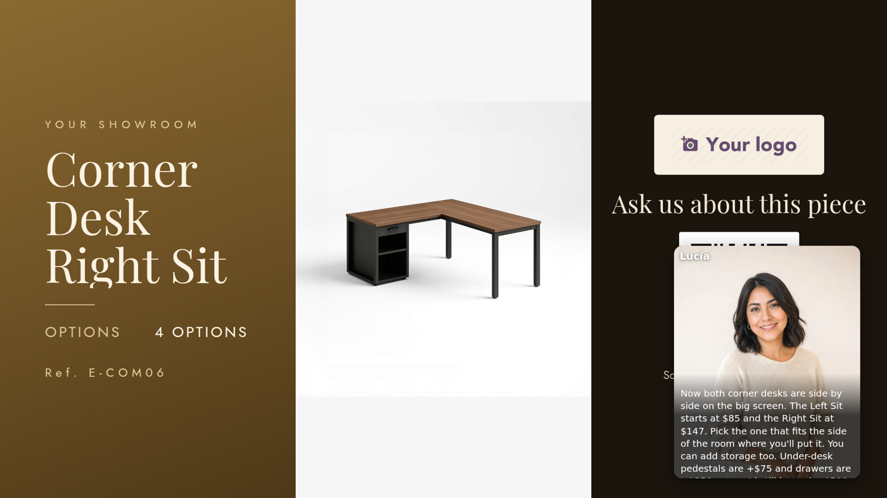
With Showroom Wall and its kiosk link: she sends the product the customer likes to the big screen, with its options, and goes with it (small, with subtitles; she speaks from the wall's speakers). Goes to the wall: she follows the product; Shows on the wall by itself: every product she opens also goes to the wall. A tap on the wall's NFC base takes the conversation to the phone.
WhatsApp (Odoo Enterprise)
In the settings, Create the template makes the WhatsApp template and sends it to Meta for approval (usually minutes to a day). When it is approved, the Send it to my WhatsApp button appears: the customer types their number and receives a page with the products and the conversation. The contact is created or found by their phone; Opportunity in CRM also creates an opportunity.
Appointments (Odoo Enterprise)
Choose the appointment type she Books. She offers free times and books the visit with the customer's name and phone.
Kiosk Quotation
With Self-Order Kiosk Quotation: "print me a quotation" opens the kiosk's quotation window for the cart, to print at the kiosk or send by WhatsApp. The quotation is linked to her conversation.
Analitix
With Analitix - Self-Order: Analitix's camera tells her when someone stops in front of the kiosk, instead of her own movement detector.
5. Reports and weekly e-mail
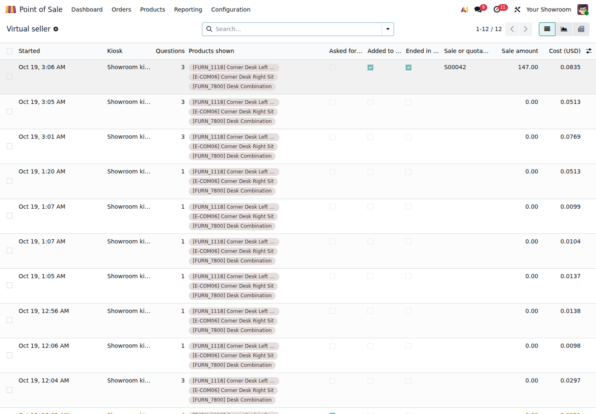
- Conversations: date, kiosk, questions, products shown, cart, appointment, WhatsApp, phone, wall, the sale it ended in (kiosk order or quotation) and its cost. Graph and pivot views.
- Open one to read the whole conversation.
- Searches: what customers looked for; in red, what was not found — products you could add.
- Weekly e-mail: the week's numbers, the most shown products and what was asked for and not found.
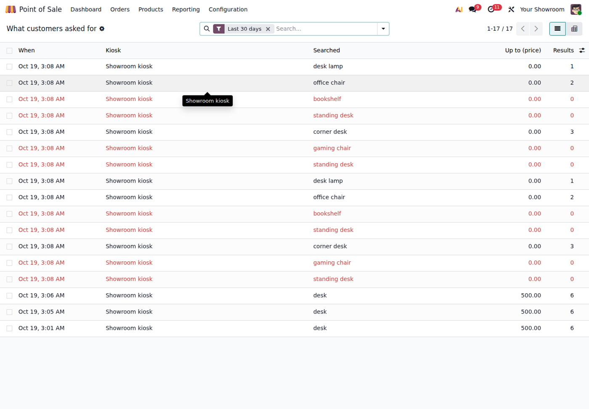
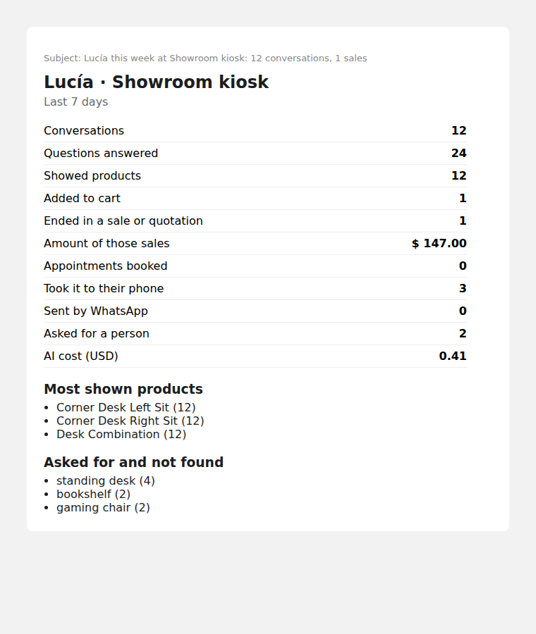
6. Costs and limits
- You pay Anthropic and OpenAI directly with your keys. In our shops a conversation costs 3 to 6 US cents on average.
- Step by step is the cheapest; instant conversation costs more (live audio).
- Each voice sentence is generated once and kept: repeated greetings cost nothing.
- The Daily limit protects you: when it is reached the button hides until the next day.
7. If something does not work
| The button does not appear | The kiosk is not in Kiosk mode, the seller is off, or the daily limit was reached (it comes back the next day). Reload the kiosk after changing the settings. |
|---|---|
| She does not hear | The kiosk must open over HTTPS and the browser must allow the microphone. |
| She does not speak | Speaks its answers is off, the OpenAI key is missing, or the tablet's volume is down. Some browsers need a first touch on the screen. |
| "Sorry, I can't talk right now" | Check the keys and the credit in Anthropic / OpenAI. |
| No WhatsApp button | The template is not approved yet by Meta. |
| She does not go to the wall | The Showroom Wall must be linked to this kiosk and its screen open. |
| Changes do not show on the kiosk | Reload the kiosk page. |
XUBAX · soporte@xubax.com · www.xubax.com